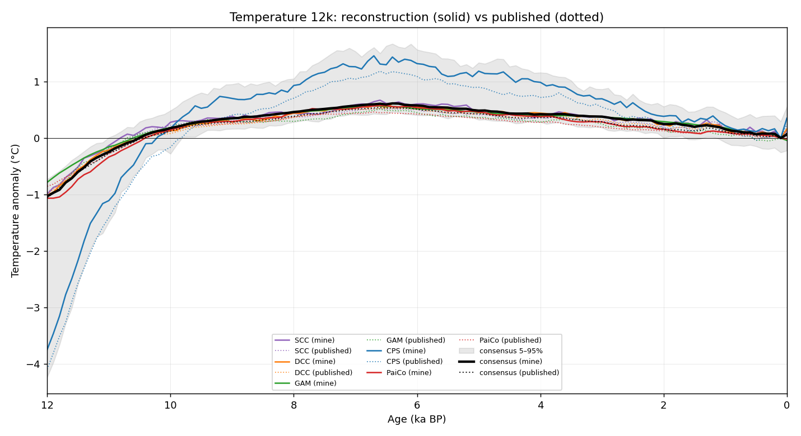

Validation of this multi-method composite reconstruction against the
published Kaufman et al. (2020) Temperature 12k curves
(doi:10.1038/s41597-020-0530-7),
bundled from the NOAA archive under reference_data/published/.
Pearson correlation (R) and the Nash–Sutcliffe coefficient of efficiency (CE)
are computed on full-record-centred anomalies (so the reference-period
convention cancels) of the ensemble-median GMST. CE = 1 is perfect;
CE = 0 equals climatology; CE < 0 is worse than climatology.
Per-method and consensus global-mean surface temperature against the published Temp12k curves over their common age range (0–12,000 yr BP). The mid-Holocene column is the mean anomaly over 6.5–5.5 ka.
| Method | n pts | mid-Holocene (mine) | mid-Holocene (published) | Pearson R | CE |
|---|---|---|---|---|---|
| SCC | 121 | 0.604 °C | 0.500 * °C | 0.9911 | 0.9780 |
| DCC | 121 | 0.556 °C | 0.500 * °C | 0.9975 | 0.9896 |
| GAM | 119 | 0.527 °C | 0.440 * °C | 0.9694 | 0.9346 |
| CPS | 121 | 1.295 °C | 1.080 * °C | 0.9964 | 0.9913 |
| PaiCo | 121 | 0.536 °C | 0.420 * °C | 0.9981 | 0.9128 |
| Consensus | 121 | 0.575 °C | 0.505 °C | 0.9980 | 0.9930 |
* where no published mid-Holocene value is bundled, the paper's Table 1 value is shown for reference.
Per-method (coloured) and consensus (black) reconstruction medians (solid) overlaid on the published Temp12k curves (dotted). The shaded band is the consensus 5–95% ensemble spread. X-axis runs from the oldest age (left) to present (right).

Pooled multi-method ensemble: 250 members.